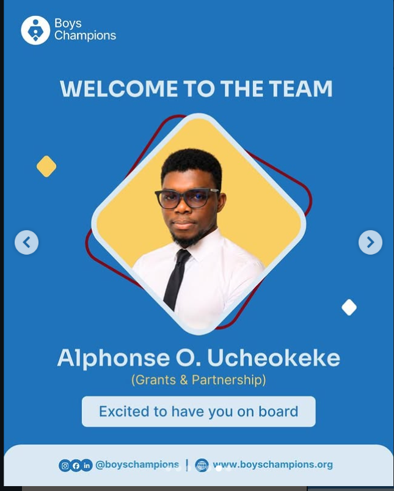

Work
The relationships and resources behind the programmes.
Most of what I do is not visible on the day of an event. It happens before, in the emails, trackers and conversations that make the day possible.
Where I've worked

Boys Champions Foundation
2026Grants and partnerships
BCF works on healthier, more caring ideas of masculinity: boys' and men's mental health, preventing gender-based violence, getting men to show up as allies. My job is the relationships and resources behind that work.
What I did there
- Built the grants tracker, starting with 14 grants, and a partnership tracker for stages, MOUs and next steps.
- Handled follow-ups, meeting prep and handovers with partners and event organisers.
- Helped write concept notes and session outlines.
- Planned how to bring around 200 inactive volunteers back into the work.
- Started exploring how BCF could earn from more than grants: corporate partners, CSR and social enterprise.

HealthChat
2024 – 2025Operations and volunteer coordination
HealthChat, an initiative of Ewezugacare Foundation, focuses on menstrual and reproductive health for women and girls. On International Day of the Girl Child in 2024 we worked with 531 girls in one school, and most of them told us nobody had prepared them for their first period. That number stayed with me.
What I did there
- Coordinated volunteers across five programmes.
- Helped run outreach at a secondary school, a correctional facility and an IDP camp in Yola.
- Supported menstrual health education and product distribution.
- Worked on logistics, safeguarding and monitoring and evaluation documents.
- Spoke on a World Menstrual Hygiene Day panel in May 2026.
A volunteer's journey
When I planned how to re-engage around 200 inactive volunteers, I tried to look at the whole journey instead of only the recruiting part. Click through the eight steps.
1. Attract
Reach people where they already are, and say plainly what volunteering here actually involves.
Things I've done
- Built a grants tracker and a partnership trackerPartnerships
- Followed up with partners and event organisersPartnerships
- Wrote concept notes and session outlinesWriting
- Planned a re-engagement path for around 200 volunteersVolunteers
- Coordinated volunteers across five health programmesVolunteers
- Ran outreach in a school, a correctional facility and an IDP campHealth
- Supported safeguarding, logistics and M&E documentsHealth
- Spoke on a menstrual hygiene day panelHealth